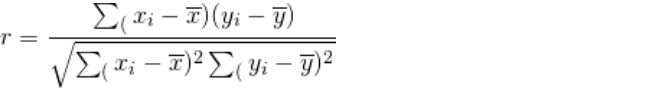
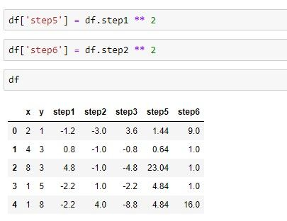
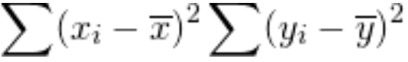

Correlation
What is correlation
A correlation is a relationship between two sets of data.
For example, in the equity markets, you may notice that stocks like Microsoft (MSFT) and Apple (AAPL) both tend to rise and fall at the same time. The price behavior between the two stocks is not an exact match, but there is enough similarity to say there is a relationship. In this scenario, we can say MSFT and AAPL have a positive correlation.
Further, there are often relationships across markets, such as equities and bonds or precious metals. We often also see a correlation between financial instruments and economic data or even sentiment indicators.
Why do corellations matter?
There are several reasons why correlations are important, here a few benefits of tracking them in the markets –
- Insights – keeping track of different relationships can provide insight into where the markets are headed. A good example is when the markets turned sharply lower in late February due to the Coronavirus escalation. The price of gold, which is known as an asset investors turn to when their mood for risky investment sours, rose sharply the trading day before the big initial drop in stocks. It acted as a warning signal for those equity traders mindful of the inverse correlation between the two.
- Strength in correlated moves – It’s much easier to assess trends when there is a correlated move. In other words, if a bulk of the tech stocks on your watchlist are rising, it’s probably safe to say the sector is bullish or that there is strong demand.
- Diversification – To make sure you have some diversification in your portfolio, it’s a good idea to make sure the assets within it aren’t all strongly correlated to each other.
- Signal confirmation – Let’s say you want to buy a stock because your analysis shows that it is bullish. You could analyze another stock with a positive correlation to make sure it provides a similar signal.
Correlation doesn’t imply causation
A popular saying among the statistics crowd is “correlation does not imply causation.” It comes up often, and it’s important to understand its meaning.
Essentially, correlations can provide valuable insights, but you’re bound to come across situations that might imply a correlation where a relationship does not exist.
As an example, data has shown a sharp rise in Netflix subscribers due to the lockdown that followed the Coronavirus escalation. The idea is that people are forced to stay at home and therefore are more likely to watch tv.
The same scenario has resulted in a rise in electricity bills. People are using more electricity at home compared to when they were at work all day.
If you were blindly comparing the rise in Netflix subscribers versus the rise in electricity usage during the month of lockdown, you might reasonably conclude that the two have a relationship.
However, having some perspective on the manner, it is clear that the two are not related and that it is not likely that fluctuations in one will impact the other moving forward. Rather, the lockdown, an external variable, is the causation for both of these trends.
What is a correlation coefficient?
We’ve discussed that fluctuations in the stock prices of Apple and Microsoft tend to have a relationship. You might then notice other tech companies also correlate well with the two.
But not all relationships are equal, and the correlation coefficient can help assess the strength of a correlation.
There are a few different ways of calculating a correlation coefficient, but the most popular methods result in a number between -1 and +1.
The closer the number is to +1, the stronger the relationship. If the figure is close to -1, it indicates that there is a strong inverse relationship.
In the finance world, an inverse relationship is where one asset rises while the other drops. Stocks and gold prices have a long-standing inverse relationship.
The closer the correlation coefficient is to zero, the more likely it is that the two variables being compared don’t have any relationship to each other.
Breaking down the math to calculate the correlation coefficient

The above formula is what’s used to calculate a correlation coefficient using the Pearson method. We will break down this formula.
There are libraries available that can do this automatically, but the following example will show how we can make the calculation manually.
We will start by creating a dataset. We can use the Numpy library to create some random data for us. Here is the code:
import numpy as np
import pandas as pd
df = pd.DataFrame(np.random.randint(0,10,size=(5, 2)), columns=list('xy'))
The image below shows what my DataFrame looks like. If you’re following along, the data will look different for you as Numpy is filling in random numbers. But the format should look the same.
Now that we have a dataset let’s move on to the formula. We will start by separating the first part of the formula.

We can break this down further.
For the formula above, we need to take each value of x and subtract it by the mean of x.
We can use the mean() function in Pandas to create the mean for us. Like this:
df.x.mean()
But we still need to subtract the mean from x. And we also need to temporarily store this information somewhere. Let’s create a new column for that and call it step1.
df['step1'] = df.x - df.x.mean()
This is what our DataFrame looks like at this point.
Now that we have the calculations needed for the first step. Let’s keep going.

The second step involves doing the same thing for the y column.
df['step2'] = df.y - df.y.mean()
That's easy enough, what's next?
The formula tells us that we need to take all the values we gathered in step 1 and multiply them by the values in step 2. We will store this in a new column labeled step3.
df['step3'] = df.step1 * df.step2
This is what the DataFrame looks like at this point:
We can now move on to the last operation in this part of the formula.
This means we need to add up all the values from the previous step.
step4 = df.step3.sum()
Great, we have summed up the values and have stored it in a variable called step4. We will come back to this later. For now, we can start on the second part of the formula.
We have already found in the following in step1, so we can use that data. We will store this data in a new column labeled step5.
df['step5'] = df.step1 ** 2
The next part of the formula tells us to do the same thing for the y values.
We can take the values that we created in step 2 and square them.
df['step6'] = df.step2 ** 2
This is what our DataFrame looks like at this point: 
Let’s look at the next part of the formula: 
This tells us that we have to take the sum of what we did in step 5 and multiply it with the sum of what we did in step 6.
step7 = df.step5.sum() * df.step6.sum()
Let’s keep going, almost there!
The last portion of this part is to simply take the square root of the figure from our previous step. We can use the Numpy library to calculate the square root.
step8 = np.sqrt(step7)
Now that we’ve done that, all that is left is to take the answer from the first part of the formula and divide it by the answer in the second part.
step4/step8
And there you have it, we’ve manually calculated a correlation coefficient. To make sure that the calculation is correct, we can use the
corr() function which is built into Pandas to calculate the coefficient.
df.x.corr(df.y)
Here is our final result. Your correlation coefficient will be different, but it should match the output from the Pandas calculation.
How to calculate the correlation coefficients for a watchlist?
Calculating a correlation coefficient in Python is quite simple as there are several libraries that can do the heavy lifting for you. In this guide, we will be using python and the libraries from this GitHub repository.
Step one – Gathering and cleaning up historical data
We are using the Alpha Vantage library in this step.
import pandas as pd
from alpha_vantage.timeseries import TimeSeries
Our first step is to import the Pandas library as we will be using it to store our data and calculate the correlation coefficient. We’ve also imported the Timeseries class from the alpha_vantage library, which will retrieve historical data.
We have exported our watchlist to a CSV file so in the next step we will import it and convert it to a list format. There are several ways to read a CSV file in Python but since we are already using Pandas, we might as well use it here rather than importing another library just for this step.
If you don’t have your watchlist in CSV format, you can just as easily create a Python list that includes the tickers within your watchlist.
#grab tickers from csv file
watchlist_df = pd.read_csv('watchlist.csv', header=None)
watchlist = watchlist_df.iloc[0].tolist()
We now have a Python list of the five stock tickers we will use in this example. Our next step is to iterate through the watchlist and download historical data.
#instantiate TimeSeries class from alpha_vantage library
app = TimeSeries(output_format='pandas')
First, we instantiate the Timeseries class from the alpha_vantage library. We’ve passed through a parameter here so that the output will be a Pandas dataframe. This will save a lot of time having to format the data.
#itter through watchlist and retrieve daily price data
stocks_df = pd.DataFrame()
for ticker in watchlist:
alphav_df = app.get_daily_adjusted(ticker)
alphav_df = alphav_df[0]
alphav_df.columns = [i.split(' ')[1] for i in alphav_df.columns]
stocks_df[ticker] = alphav_df['adjusted'].pct_change()
Next, we iterate through our Python list of stock tickers and call the Alpha Vantage API for each ticker's data. But before doing that, we’ll create an empty Pandas dataframe that we can append data to.
What we’ve done is taken the ‘adjusted’ column, which is the adjusted daily close, and appended it to our stocks_df dataframe. Note the additional pct_change() function. This will normalize our data by converting the price data to a percentage return. This is what our dataframe looks like at this point.
Now we have a nicely formated time-series dataframe in less than 20 lines of code!
Step Two – Calculating the correlation coefficient
Now that we have our data, we can easily check the correlation coefficient between any stocks within our dataframe. Here is how we check the correlation between AAPL and MSFT.
print(stocks_df.AAPL.corr(stocks_df.MSFT))
What we’ve done here is taken the column of adjusted closing prices for AAPL and compared it with the column for MSFT. To access a single column, we specify the name of the dataframe and column like so:
print(stocks_df.AAPL)
alternatively, we can also access it like this:
print(stocks_df['AAPL'])
When dealing with a single column we are no longer working with a dataframe. Rather, we are working with a Pandas series. The basic syntax for calculating the correlation between different series is as follows:
Series.corr(other_series)
In our example, we found a correlation coefficient of 0.682 between AAPL and MSFT. Remember, the closer to 1, the higher the positive correlation. So in this example, there is a very strong correlation between these two stocks.
Let’s take a look at the correlation between Apple and Netflix:
print(stocks_df.AAPL.corr(stocks_df.NFLX)
The correlation coefficient is -0.152. It’s quite close to zero, which indicates that there was no correlation between these two stocks. At least during that time period.
There are three main methods used in calculating the correlation coefficient: Pearson, Spearman, and Kendall. We will discuss these methods in a bit more detail later on in the guide.
By default, Pandas will use the Pearson method. You can pass through different methods as parameters if you desire to do so. Here is an example of a calculation using the Spearman method:
print(stocks_df.AAPL.corr(stocks_df.NFLX, method='spearman')
And this is how you would get the correlation coefficient using the Kendall method:
print(stocks_df.AAPL.corr(stocks_df.NFLX, method='kendall'))
Correlation of returns versus prices
We calculated the percentage return between each price point in our dataset and ran our correlation function on that rather than calculating it on the raw data itself. We do this to get a more accurate correlation coefficient.
The reasoning behind it is that it standardizes the data which is beneficial no matter which calculation method you use.
If you’re using the Spearman or Kendall method, which utilizes a ranking system, returns data will remove some of the extremes from your dataset, which can otherwise influence the entire ranking system.
The Pearson method doesn’t use a ranking system but heavily relies on the mean of your data set. Using returns data narrows the range of your dataset, which in turn puts more emphasis on deviations from the mean, resulting in higher accuracy.
values_x = [10, 11, 13, 16, 17, 4, 5, 6]
values_y = [10, 11, 13, 16, 17, 18, 19, 20]
Take a look at the above two datasets as an example.
Notice how they both have almost the same data? The difference is that values_x dropped off sharply in the third last value from 17 to 4. However, it continued to rise by one in the last two values, the same way values_y did.
This type of behavior can often happen in the markets. For example, a stock might have reported earnings, which caused a sharp but temporary drop in its price. But aside from the momentary drop, the overall fluctuations in the stock price have not changed much at all compared to other correlated stocks.
The ranking systems used in correlation calculations, however, will view the momentary decline differently. It will assign an arbitrarily low value to the last three values in values_x since they are the lowest in the dataset. At the same time, it will rank the last three values in values_y as the largest.
This creates a major discrepancy that will ultimately cause our correlation coefficient to be much lower than it should be.
In a non-ranking system such as the Pearson method, the last three values will drag down the mean value for the entire dataset.
If we take the returns instead, we are comparing how much one value fluctuated relative to the value before it.
In that case, there would have been a major decline when the values in values_x dropped from 17 to 4, but the divergence in correlation stops there as both the data sets rose in value in the last two places.
How to create a time-series dataset in Pandas?
A time-series is simply a dataset that follows regular, timed intervals. The previous example, where we had data for five stocks, is a good example of a time-series dataset.
Further, Pandas intuitively lined up price data when we merged all five stocks into one dataframe based on the date column, which all of our data had in common. This column then acts as an index for our data.
We can just as easily create a dataframe with a time-series index from scratch. The next example will show how to do that with data we have saved in a CSV file.
import pandas as pd
TSLA_df = pd.read_csv('TSLA.CSV')
print(TSLA_df)
Here we’ve imported price data for TSLA based on 15-minute intervals. In other words, 15-minute bars for TSLA.

Next we will check the data type for our newly-created index.
print(TSLA_df.index[:4])
As you can see, the dtype shows the index as an object. We can convert it to a DateTime like so:
TSLA_df.index = pd.to_datetime(TSLA_df.index)
If we check the index again, we will now see the dtype as ‘datetime64[ns]’ which is what we are after.
When importing a CSV file, we can pass through parse_dates=True into the pd.read_csv() function to automatically parse the dates as a DateTime object.
TSLA_df = pd.read_csv('TSLA.CSV', index_col=0, parse_dates=True)
We did it manually in this example just to illustrate how it can be done in the event you are creating a dataframe using other methods than from a CSV.
What is a correlation matrix?
The previous examples have shown how to calculate a correlation coefficient for two stocks. But if we have a dataframe full of stocks? Surely there has to be an easier way to get the coefficient for everything in the dataframe?
That’s where the correlation matrix comes in. It is a table or a matrix that will display the correlation coefficient for everything in the dataframe. To create this, simply type your dataframe name, followed by .corr(). Or in our example, stocks_df.corr().
Here we have our correlation matrix. The first column in the first row is the correlation between AAPL and AAPL, which obviously will have the highest correlation when comparing data with itself.
Looking at this matrix, we can easily see that the correlation between Apple (AAPL) and Exxon Mobile (XOM) is the strongest while the correlation between Netflix (NFLX) and AAPL is the weakest.
Further, there is fairly notable negative correlation between AAPL and GLD which is an ETF that tracks gold prices.
We can also create a heatmap. This will allow us to visualize the correlation between the different stocks.
To do this, we will use the Seaborn library, which is a great tool for plotting and charting. It is built on top of the popular matplotlib library and does all the heavy lifting involved in creating a plot.
import seaborn as sns
import matplotlib.pyplot as plt
ax = sns.heatmap(stocks_df.corr())
plt.show()
Here we’ve imported the library and called the heatmap function to display the heatmap. At this stage, we’ve only passed through the correlation matrix dataframe.
We can now assess the strength in correlation based on color, and there is a useful guide on the right-hand side. But since we are used to seeing things in red and green in the finance world, let’s customize it a bit.
ax = sns.heatmap(stocks_df.corr(), cmap='RdYlGn', linewidths=.1)
plt.show()
The above code snippet sets the Red, Yellow, Green values to cmap which defines our colors. We have also passed through a line width of .1 to create a bit of space between the boxes just to improve the visual aesthetics.
There you have it. It is much easier to see that AAPL and NFLX have the weakest correlation. We can also easily see that GLD has a negative correlation with all of the other assets.
What is a correlation matrix?
You can use a correlation matrix to filter out stocks for various reasons quickly. Maybe you’re already in a trade, and you don’t want to trade other instruments with a strong correlation. Another reason might be to check other strongly correlated instruments to ensure your analysis produces a similar signal.
As an example, say you’ve already taken a long position in AAPL. Now your automated trading algo is sending you a signal to buy MSFT. This is very likely to happen since we’ve already determined that the two have a strong correlation with each other.
In this case, you might want to skip that trade because it is only increasing your risk exposure. In other words, when the correlation is that high, it’s not all that different from just doubling up your exposure in AAPL, and that is something to avoid.
In the same way, we can also confirm if our signal is strong enough to act on. For example, let’s say we are trading a breakout strategy, and we buy a stock when it exceeds more than one standard deviation from its average.
We get a signal to buy NFLX. We can see what stock is most closely correlated with NFLX to determine if it has also exceeded one standard deviation from its average. We can use the idxmax() function from Pandas to figure out the strongest correlation.
nflx_corr_df = stocks_df.corr().NFLX
print(nflx_corr_df.idxmax())
But wait, we already know that the highest correlation is going to be with NFLX itself, it produces a correlation of 1. So we want to filter for correlations less than 1.
print(nflx_corr_df[ nflx_corr_df < 1 ].idxmax())
The above code returns ‘MSFT’. Now we can check where Microsoft is trading relative to its standard deviation. If it is trading below it, we can even wait until it exceeds it to give us a stronger signal on our original NFLX buy signal.
In the same manner, we can easily check for inverse correlations with NFLX as follows
print(nflx_corr_df.idxmin())
This returned ‘XOM’. If our analysts gives us a bearish signal for XOM it would once again provide more conviction on our bullish NFLX trade.